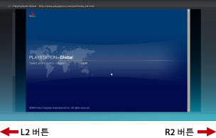
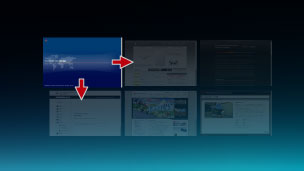

네트워크 > 브라우즈 모드/윈도우 모드에 대하여
브라우즈 모드/윈도우 모드에 대하여
브라우즈 모드
화면의 전체 높이와 너비로 창이 표시됩니다. 복수의 창이 열린 경우 나란히 표시됩니다. L2 또는 R2 버튼을 사용하여 다른 창으로 이동할 수 있습니다.

윈도우 모드
열린 창의 수에 맞춰 화면 표시가 변경됩니다. 방향키를 사용하여 창을 선택한 다음  버튼을 누르면 브라우즈 모드로 표시됩니다.
버튼을 누르면 브라우즈 모드로 표시됩니다.

모드 변경
다음과 같이 브라우즈 모드와 윈도우 모드를 전환할 수 있습니다.
| 브라우즈 모드 > 윈도우 모드 | 왼쪽 스틱(L3 버튼)을 누릅니다. |
|---|---|
| 윈도우 모드 > 브라우즈 모드 |
|